기계정비산업기사 (2016-05-08 기출문제)
1과목: 공유압 및 자동화시스템
1. 압축공기의 건조에 사용되는 흡착식 건조기에 관한 설명으로 옳은 것은?
- 일시적으로 사용한다.
- 외부에너지 공급이 필요하지 않다.
- 사용되는 건조제는 염화리튬 수용액, 폴리에틸렌 등이다.
- 물리적 방식을 사용하여 반영구적으로 사용할 수 있다.
(정답률: 76%)

2. 다음 유압 유량제어 밸브 상세 기호의 명칭은?
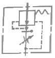
- 분류형 유량 조정밸브
- 체크붙이 유량 조정밸브
- 바이패스형 유량 조정밸브
- 온도보상붙이 직렬형 유량 조절밸브
(정답률: 68%)
3. 그림은 4포트 전자 파일럿 전환밸브의 상세 기호이다. 이것을 간략 기호로 나타낸 것은?
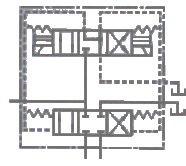
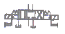
(정답률: 52%)
4. 기체 봉입형 어큐뮬레이터(accumulator)에 밀봉하여 넣는 기체의 종류는?
- 산소
- 수소
- 질소
- 이산화탄소
(정답률: 86%)
5. 공기 압축기로부터 애프터 쿨러 또는 공기탱크까지의 연결 라인이며 고온 고압과 진동이 수반되는 부분은?
- 이송라인
- 제어라인
- 토출라인
- 흡입라인
(정답률: 75%)
6. 피스톤 없이 로드 자체가 피스톤 역할을 하는 것을 로드가 굵기 때문에 좌굴하중을 받을 수 있고, 공기 구멍을 두지 않아도 되는 유압 단동 실린더는?
- 램형 실린더(ram cylinder)
- 디지털 실린더(digital cylinder)
- 양로드 실린더(double rod cylinder)
- 텔레스코프 실린더(telescopre cylinder)
(정답률: 75%)
7. 다음 밸브의 설명으로 틀린 것은?
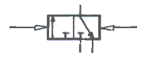
- 메모리형
- 3/2 way 밸브
- 정상상태 닫힘형
- 유압에 의한 작동
(정답률: 70%)
8. 공압 실린더 직경의 크기가 제한되어 있는 경우 보다 큰 힘을 내기 위하여 사용되는 실린더는?
- 탠덤형 실린더
- 다위치형 실린더
- 양로드형 실린더
- 텔레스코프형 실린더
(정답률: 78%)
9. 실린더의 지지방식 중 피스톤 로드의 중심선에 대하여 직각을 이루는 실린더의 양측으로 뻗은 1쌍의 원통모양 피벗으로 지지된 부착형식은?
- 풋형
- 용접형
- 플랜지형
- 트러니언형
(정답률: 63%)
10. 압축공기의 특징으로 틀린 것은?
- 비압축성이다.
- 저장성이 좋다.
- 인화의 위험이 없다.
- 대기 중으로 배출할 수 있다.
(정답률: 82%)
11. 다음 그림의 회로는?
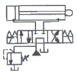
- 차동 회로
- 2 펌프 회로
- 브레이크 회로
- 임의위치 로크 회로
(정답률: 55%)
12. 연속 회전운동을 하지 않고 한정된 회전각내에서 회전운동을 하는 공압 액추에이터는?
- 공압 모터
- 공압 실린더
- 공압 전기모터
- 공압요동 액추에이터
(정답률: 84%)
13. 텔레스코프형 실린더의 특징으로 틀린 것은?
- 긴 행정거리를 얻을 수 있다.
- 단동 및 복동 형태로 작동된다.
- 전진 끝단에서의 출력이 떨어진다.
- 다른 실린더에 비해 속도제어가 용이하다.
(정답률: 63%)
14. 스트립(strip) 또는 로드형상의 재질이 그 재질 전체의 길이에 걸쳐 부분적인 공정이 이루어지는 작업에 적합한 핸들링 방식은?
- AGV
- 서보시스템
- 로터리 인덱싱
- 리니어 인덱싱
(정답률: 66%)
15. 전기신호로 전자석을 조작해서 그 힘으로 전자 밸브 내의 스풀(spool)을 변환시켜 공기의 흐름 방향을 제어하는 것은?
- 배압 센서
- 리밋 스위치
- 공기압 실린더
- 솔레노이드 밸브
(정답률: 69%)
16. 전원 차단 시 내용이 전부 지워지는 메모리는?
- RAM
- ROM
- PROM
- EPROM
(정답률: 69%)
17. 전 단계의 작업완료 여부를 리밋 스위치 또는 센서를 이용하여 확인한 후 다음 단계의 작업을 수행하는 제어방법은?
- 메모리 제어
- 시퀀스 제어
- 파일럿 제어
- 시간에 따른 제어
(정답률: 83%)
18. 다음 진리표와 관계가 있는 밸브는?
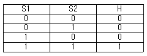
- 2압 밸브
- OR 밸브
- 교축 밸브
- 체크 밸브
(정답률: 81%)
19. 그림과 같은 논리 회로의 연산 결과를 불식으로 나타낸 것은?
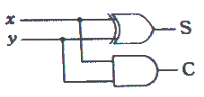
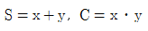
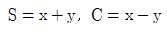
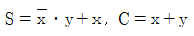
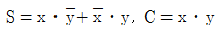
(정답률: 62%)
20. 논리방정식을 간략하게 한 것으로 틀린 것은?
- A+0=A
- A+1=1
- Aㆍ0=0
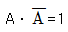
(정답률: 78%)
2과목: 설비진단관리 및 기계정비
21. 변위 진동의 표현 단위가 아닌 것은?
- m
- mm
- ㎛
- mm/sec
(정답률: 69%)
22. 다음 중 집중보전의 장점이 아닌 것은?
- 노동력의 유효이용
- 보전 책임의 명확성
- 현장 감독의 용이성
- 보전용 설비 공구의 유효이용
(정답률: 67%)
23. 주로 베어링 등 동일 부위에서 측정한 값을 판정기준과 비교하여 양호/주위/위험을 판정하는 것은?
- 0점 판정 기준
- 상대 판정 기준
- 상호 판정 기준
- 절대 판정 기준
(정답률: 65%)
24. 생산하는 제품의 흐름에 따라 설비를 배치하여 운반거리가 짧고 가공물의 흐름이 빠르며 대량 생산하는 경우에 가장 적합한 설비의 배치로서 맞는 것은?
- 그룹별 배치
- 공정별 배치
- 제품별 배치
- 제품고정 배치
(정답률: 74%)
25. 한국산업표준에 따른 방청유로 구분되지 않는 것은?
- 수분 함유형
- 지문 제거형
- 용제 희석형
- 방청 페트롤레이텀
(정답률: 64%)
26. 제조원가는 크게 직접비와 간접비로 구분된다. 직접비에 포함되지 않는 비용은 무엇인가?(오류 신고가 접수된 문제입니다. 반드시 정답과 해설을 확인하시기 바랍니다.)
- 제품 재료비
- 기술지원 인건비
- 제품 생산 인건비
- 외주 및 임가공 비용
(정답률: 81%)
27. 다음 중 가속센서로 널리 사용되는 형식은?
- 광학형
- 압전형
- 용량형
- 와전류형
(정답률: 67%)
28. 롤링 베어링에 발생하는 진동의 종류가 아닌 것은?
- 다듬면의 굴곡에 의한 진동
- 베어링 구조에 기인하는 진동
- 베어링의 손상에 의한 진동
- 베어링 선형성에 의한 진동
(정답률: 69%)
29. 설비 배치 계획이 필요한 경우가 아닌 것은?
- 설비 개선
- 작업장의 확장
- 신제품의 제조
- 새 공장의 건설
(정답률: 52%)
30. 설비보전 표준에서 급유표준, 청소표준, 조정표준은 어디에 속하는가?
- 정비표준
- 설비검사표준
- 설비성능표준
- 설비자재 검사표준
(정답률: 65%)
31. 설비진단 기술의 도입시 나타나는 일반적인 효과와 관련이 가장 적은 것은?
- 경향관리를 통하여 설비의 수명 예측이 가능하다.
- 화가 심한 설비에 효과적이며 오감에 의한 진단이 일반적이다.
- 요설비, 부위를 상시 감시함에 따라 돌발사고를 미연에 방지할 수 있다.
- 검원이 경험적인 기능과 진단기기를 사용하면 보다 정량화 할 수 있으므로 쉽게 이상측정이 가능하다.
(정답률: 79%)
32. 톱-다운(Top-down)으로서의 회사목표와 버텀-업(Bottom-up)으로서의 전 종업원이 참가하여 활동을 일체화하고 동기부여로 현장 설비에 대한 자주보전을 통하여 설비 종합효율 향상을 추진하는 활동은?
- 벤치마킹
- QC 분임조
- 안전 분임조
- TPM 분임조
(정답률: 83%)
33. 연간 불출 회수가 4회 이상인 정량 발주방식의 주문점 계산식으로 적당한 것은? (단, P : 주문점,
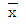
: 평균사용량, D : 기준조달기간, m : 예비재고이다.)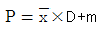
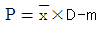
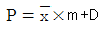
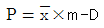
(정답률: 68%)
34. 다음 중 생산의 3요소가 아닌 것은?
- 사람(Man)
- 자본(Capital)
- 설비(Machine)
- 재료(Material)
(정답률: 75%)
35. 구입 또는 설치된 설비가 사용자의 환경변화나 또는 요구를 효율적 및 경제적 측면으로 만족시켜 주지 못할 때 설계 또는 부품의 일부를 공학적 또는 기술적인 방법으로 개조시키는 설비보전활동은?
- 개량보전
- 사후보전
- 예방보전
- 보전예방
(정답률: 82%)
36. 다음의 진동방지 방법 중 고주파 진동제어에는 효과적이나 저주파 진동제어에는 역효과를 줄 수 있는 방법은?
- 진동차단기 사용
- 거더(Girder)의 사용
- 2단계 차단기의 사용
- 기초의 진동을 제어하는 방법
(정답률: 60%)
37. 설비관리 업무에 있어서 최고부하(peak load)를 없애는 방법에 해당되지 않는 것은?
- OSI(On Stream Inspection) : 기계장치 운전 중 검사
- OSR(On Stream Repair) : 기계장치 운전 중 수리
- 부분적 SD(Shut Down) : 부분적으로 설비를 정지시켜 수리
- CD(Cost Down) : 원가 절감위한 오버홀(overhaul) 실시
(정답률: 71%)
38. 설비의 열화측정, 열화진행방지, 열화회복 등을 하기 위한 제 조건의 표준으로서 보전직능마다 각기 설비검사표준, 정비표준, 수리표준으로 구분하여 명시하는 표준은?
- 설비설계규격
- 설비성능표준
- 설비보전표준
- 시운전 검수표준
(정답률: 81%)
39. TPM에서 자주보전활동에 해당되는 것은?
- 오버홀을 요하는 것
- 일상점검을 요하는 것
- 분해, 부착이 어려운 것
- 특수한 기능을 요하는 것
(정답률: 79%)
40. 음 에너지(sound energy)에 의해 매질에 미소한 압력변화가 생기는 부분은?
- 음원
- 음장
- 음압
- 음의 세기
(정답률: 77%)
3과목: 공업계측 및 전기전자제어
41. 증폭기에서 방형파 또는 계단 신호 입력에 대해 출력 전압이 변하는 비율의 최대값은?
- 슬루율
- 증폭율
- 감쇄율
- 이득율
(정답률: 68%)
42. 전원전압을 일정하게 유지하기 위해 사용되는 소자는?
- 제너 다이오드
- 터널 다이오드
- 포토 다이오드
- 쇼트기 다이오드
(정답률: 82%)
43. 어떤 도체에 t(sec) 동안 Q(C)의 전기량이 이동하면 이때 흐르는 전류 I(A)는 어떤 식으로 표시되는가?
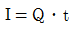
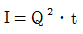
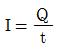
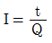
(정답률: 65%)
44. 조절밸브(제어요소)가 프로세스(제어대상)에 주는 신호는?
- 조작량
- 제어량
- 기준입력
- 동작신호
(정답률: 67%)
45. 도체에 변형을 가하면 길이와 단면적의 변화에 의해 저항률이 바뀌는 원리를 이용하여 압력센서로 사용되는 것은?
- 홀센서
- 서미스터
- 리드스위치
- 스트레인게이지
(정답률: 67%)
46. 열동계전기의 문자기호로 옳은 것은?
- TR
- TDR
- THR
- TLR
(정답률: 74%)
47. 차압식 유량계가 아닌 것은?
- 오리피스
- 벤투리관
- 로터미터
- 플로우 노즐
(정답률: 55%)
48. 시퀸스제어의 작동 상태를 나타내는 방식이 아닌 것은?
- 타임 차트
- 플로우 차트
- 릴레이 회로도
- 나이퀴스트 선도
(정답률: 71%)
49. 전자식 유량계용 변환기를 설명한 것으로 옳은 것은?
- 유량은 기전력에 반비례한다.
- 유체의 종류에 영향을 받지 않는다
- 패러데이의 전자유도법칙을 응용한 것이다.
- 유량변환의 1차 결과 출력은 직류 전압이다.
(정답률: 74%)
50. 다음 그림의 회로에서 출력전압(Vout)은? (단, R1=R2=R3=RF)
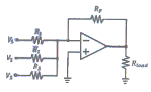
- -(V1+V2+V3)
- +(V1+V2+V3)
- [(V1+V2+V3)/(R1+R2+R3)]V1
- [(R1+R2+R3)/(V1+V2+V3)]V1
(정답률: 70%)
51. 자기 인덕턴스가 0.5H인 코일에 전류 10A를 흘릴 때 축저되는 에너지는 몇 J 인가?
- 50
- 25
- 5
- 2.5
(정답률: 47%)
52. 다이오드 PN 접합을 하고 순 바이어스 전압을 공급 시 나타나는 현상은?
- 전기장의 강해진다.
- 전위 장벽이 낮아진다.
- 전류의 흐림이 어렵다.
- 공간 전하 영역의 폭이 넓어진다.
(정답률: 57%)
53. PLC(Programmable Logic Controller)가 갖추어야 할 조건이 아닌 것은?
- 점검 및 보수가 용이할 것
- 제어반 설치 면적이 클 것
- 안정성 및 신뢰성이 높을 것
- 프로그램 작성 변경이 용이할 것
(정답률: 83%)
54. 슈미트 트리거 회로의 출력 파형은 어느 것인가?
- 정현파
- 구형파
- 삼각파
- 톱니파
(정답률: 55%)
55. 면적식 유량계의 설치요령 설명 중 틀린 것은?
- 수직으로 설치한다.
- 하류측에는 역지밸브를 설치한다.
- 가로, 세로 응력이 걸리지 않도록 한다.
- 유체의 유입방향은 상부에서 하부방향으로 한다.
(정답률: 65%)
56. 다음과 같은 논리회로의 출력 Y를 구하면?
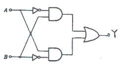
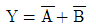
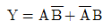
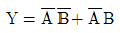
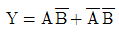
(정답률: 73%)
57. 단위 계단 함수 u(t)의 라플라스 변환은?
- e
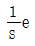
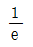
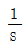
(정답률: 66%)
58. 제어기기는 검출기, 변환기, 증폭기, 조작기기 등으로 구성되어 진다. 이 때 서보모터는 어디에 해당 되는가?
- 증폭기
- 변환기
- 검출기
- 조작기기
(정답률: 65%)
59. SI 기본 단위계에 해당되지 않는 것은?
- 켈빈(K)
- 암페어(A)
- 라디안(rad)
- 킬로그램(kg)
(정답률: 76%)
60. 수동조작 자동복귀 접점 심벌은?
(정답률: 61%)
4과목: 기계정비 일반
61. 미끄럼이 거의 없어 변속비가 일정하게 유지되고 두 축이 평행한 경우에 한하여 사용되며, 진동, 소음에 취약하여 고속회전에는 사용하기 곤란한 전동장치는?
- 벨트 전동장치
- 체인 전동장치
- 기어 전동장치
- 로프 전동장치
(정답률: 65%)
62. 편 흡입형 벌류트 펌프(volute pump)의 임펠러(impeller)에 작용하는 추력을 평형시키는 방법으로 가장 적절한 것은?
- 고 양정의 펌프(pump)로 만든다.
- 임펠러에 웨어링(wearing)을 부착한다.
- 임펠러에 밸런스 홀(balance hole)을 만든다.
- 레이디얼 베어링(radial bearing)을 사용한다.
(정답률: 66%)
63. 볼트의 밑 부분이 부러졌을 때 빼내기 위해 사용하는 공구는?
- 탭
- 드릴
- 스크류바이스
- 스크류익스트랙터
(정답률: 80%)
64. 다음 커플링 중 플렉시블 커플링이 아닌 것은?
- 기어 커플링
- 머프 커플링
- 고무 커플링
- 체인 커플링
(정답률: 66%)
65. 베어링의 그리스 윤활상태를 측정하는 측정 기구는?
- 회전계
- 진동계
- 소음계
- 베어링 체커
(정답률: 82%)
66. 벌류트 펌프(volute pump)시운전 시 체크하여야 할 항목으로 옳지 않은 것은?
- 토출 밸브를 열어둔다.
- 각종 게이지를 확인 후 기록해 둔다.
- 공기빼기 코크를 열고 마중물을 넣는다.
- 펌프를 손으로 돌려 회전상태를 확인한다.
(정답률: 68%)
67. 다음 중 V 벨트의 특징이 아닌 것은?
- 벨트가 잘 벗겨진다.
- 고속운전을 시킬 수 있다.
- 미끄럼이 적고 속도비가 크다.
- 이음이 없어 전체가 균일한 강도를 갖는다.
(정답률: 75%)
68. 송풍기의 회전수를 변화시키는 방법이 아닌 것은?
- 가변 풀리에 의한 조절
- 정류자 전동기에 의한 조절
- 극수 변환 전동기에 의한 조절
- 열동 과전류 계전기에 의한 조절
(정답률: 60%)
69. 열 박음을 위해 베어링을 가열 유조에 넣고 가열할 때 몇℃이상에서 베어링의 경도가 저하 되는가?
- 130℃
- 180℃
- 210℃
- 280℃
(정답률: 71%)
70. 베어링 외, 탄소강 재질의 기계부품을 가열끼움 작업할 때 다음 중 가열온도로 가장 적합한 것은?
- 100℃~150℃
- 200℃~250℃
- 400℃~450℃
- 500℃~600℃
(정답률: 74%)
71. 사용압력이 1kgf/cm2 이상의 큰 압력으로 기체를 송출시키는 기기는?
- 왕복식 압축기
- 양 흡입형 송풍기
- 터보 팬(turbo fan)
- 실로코 통풍기(siroco fan)
(정답률: 59%)
72. 기어의 치면 열화가 아닌 것은?
- 습동마모
- 소성항복
- 표면피로
- 균열,소손
(정답률: 57%)
73. 유체가 일직선으로 흐르고 유체저항이 가장 작으며, 유체흐름에 대해 수직으로 개폐하는 밸브는?
- 앵글 밸브(angle valve)
- 글로브 밸브(globe valve)
- 슬루스 밸브(sluice valve)
- 스윙 체크 밸브(swing check valve)
(정답률: 57%)
74. 1kW 이상의 3상 유도전동기에 부착되어 있는 유성기어 감속기에 사용하는 급유의 형태는?
- 적하 급유
- 유욕 급유
- 그리스 급유
- 사이펀 급유
(정답률: 57%)
75. 마이크로미터에 관한 설명으로 옳은 것은?
- 측정범위는 0~150mm, 0~300mm 등 150mm씩 증가한다.
- 본척의 어미자와 부척의 아들자를 이용하여 길이를 측정한다.
- 딤블을 이용하여 측정압력을 일정하게 하여 균일한 측정이 되도록 한다.
- 외측 마이크로미터는 앤빌과 스핀들 사이에 측정물을 대고 길이를 측정한다.
(정답률: 58%)
76. 압축기 부품에서 밸브의 취급불량에 의한 고장이라고 볼 수 없는 것은?
- 볼트의 조임 불량
- 시트의 조립 불량
- 그랜드 패킹의 과다 조임
- 스프링과 스프링 홈의 부적당
(정답률: 65%)
77. 전 양정이 약 100m 이하인 중ㆍ대형 원심펌프에 사용되는 역류방지 밸브는?
- 푸트 밸브
- 플랩 밸브
- 체크 밸브
- 슬루스 밸브
(정답률: 70%)
78. 밸브의 정비에 관한 설명으로 옳은 것은?
- 밸브 시트 접촉면이 편마모 되어 래핑하였다.
- 밸브 스프링의 탄성이 감소되어 손으로 수정하여 사용하였다.
- 밸브 플레이트가 마모한게에 달하였으나 파손되지 않아 그대로 두었다.
- 밸브 부품의 사용 수명기간이 초과하였으나 성능에는 이상이 없어 교환하지 않았다.
(정답률: 78%)
79. 플랜지의 볼트(bolt) 조임 순서로 가장 적합한 것은?
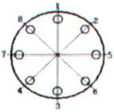
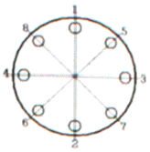
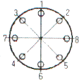
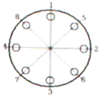
(정답률: 77%)
80. 두 축이 서로 평행한 기어는?
- 베벨 기어
- 헬리컬 기어
- 헬리컬 베벨 기어
- 스파이럴 베벨 기어
(정답률: 63%)